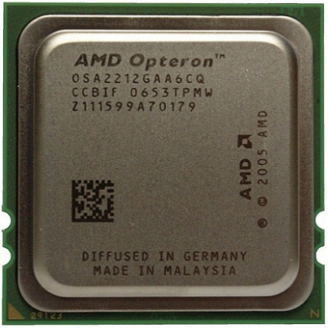

En computación, la unidad aritmética lógica o unidad aritmético-lógica, también conocida como ALU, es un circuito digital que calcula operaciones aritméticas y operaciones lógicas, entre valores de los argumentos.

Definimos genéricamente a la unidad ALU (por sus siglas en inglés Arithmetic Logic Unit) como una de las unidades que forman parte de la Unidad Central de Procesos (es decir, del Procesador, Microprocesador o CPU - Central Processor Unit, por sus siglas en inglés) mediante la cual es posible realizar una gran cantidad de operaciones aritméticas básicas (Suma, Resta, División y Multiplicación) además de realizar algunas operaciones Lógicas (Yes, Or, Not, And - Es decir, si; y, o, no) entre dos números o dos conjuntos de números.